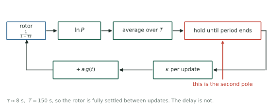
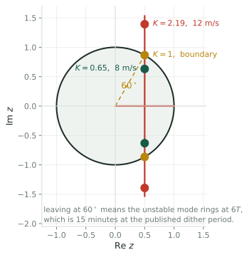
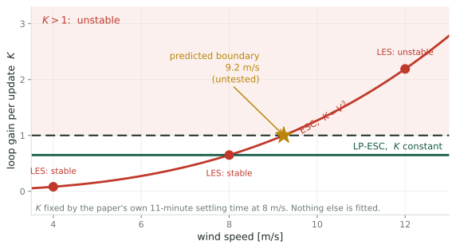

The published model cannot go unstable. The simulation did. A sampled-data account, calibrated on their own numbers
Robot Control Lab · Systems Engineering · UT Dallas
What we were told
A version of extremum seeking that “converges very fast but takes too long to tune its parameters.”
What the papers show
Settling times from 8 minutes to 46, and at one wind speed no settling time at all, because the algorithm goes unstable.
So the governing question is not only how noisy the gradient is. It is what sets the ceiling on convergence rate, and whether anyone knows where that ceiling is.
The 2017 analysis reduces the whole loop to one equation,
\[\dot{\tilde u} = -\omega_c\,\tilde u, \qquad \omega_c = \kappa\left|\frac{\partial^2 C_P}{\partial u^2}\right| P_{\text{wind}}\]
One pole, on the negative real axis, for any positive gain. Raise \(\kappa\), or raise the wind, and it moves further left. It converges faster and it never rings.
The 2019 large-eddy simulations report plain ESC as unstable at 12 m/s, in uniform inflow and again under shear with turbulence, with the torque gain oscillating hard enough to stall the turbine repeatedly.
A first-order model cannot produce that behaviour at any gain. Whatever sets the limit is not in the published analysis.

The rotor settles in about 8 s and the dither period is 150 s, so the rotor is not the missing dynamics. It is fully settled between updates.
You cannot act on a measurement until its averaging window has closed.
Why it is unavoidable
The gradient estimate for period \(n\) exists only once period \(n\) has finished. The soonest it can change the parameter is period \(n+1\).
What it is, in the loop
One sample of pure delay, which is a second pole. Continuous-time analysis does not see it because it assumes the estimate is available instantaneously.
This is the same structure as the 27% of each period the 2019 scheme blanks out to avoid transients. Both are the loop paying for the fact that measurement takes time.
With the rotor settled, the loop is a discrete integrator plus a one-sample delay. The characteristic equation is
\[z^2 - z + K = 0, \qquad K = \kappa |H| \ \text{per update}\]
Jury’s criterion for \(z^2 + b_1 z + b_0\) requires \(|b_0| < 1\) and \(|b_1| < 1 + b_0\), which here gives
\[\boxed{\;0 < K < 1\;}\]
continuous first order no bound at all
discrete integrator alone \(K < 2\)
with the delay \(K < 1\)

The pair leaves the unit circle at \(60^\circ\), so the mode that goes unstable rings at \(6T\). At the published dither period that is a 15 minute oscillation, which is a signature you can look for in the existing time series.
The 2019 paper tunes for a 99% settling time of 11 minutes at 8 m/s, with \(T = 150\) s. That is \(4.4\) updates, so \((1-K)^{4.4} = 0.01\) and
\[K(8\ \text{m/s}) = 0.649\]
Nothing else is fitted. Plain ESC has \(K \propto V^3\):
4 m/s \(K = 0.081\), stable.
LES: stable.
8 m/s \(K = 0.649\), stable.
LES: stable.
12 m/s \(K = 2.19\), unstable.
LES: unstable.

The boundary sits at 9.2 m/s. And because the logarithm makes \(K\) independent of wind speed, LP-ESC stays at \(0.649\) everywhere and never crosses, which is exactly what the LES found at all three speeds.
Run plain ESC at 10 m/s in the existing setup. One run. The model says unstable. A stable result falsifies it cleanly, and tells us something specific is missing from the loop.
Second, cheaper check
Look at the existing 12 m/s time series. The model says the oscillation should have a period near \(6T\), about 13 minutes at that gain. No new runs needed.
Third, on the other side
The model says the ceiling moves with \(T\). Halving the dither period should move the boundary up by \(2^{1/3}\), to about 11.6 m/s.
A hard ceiling
\(K < 1\) bounds convergence rate independently of noise. No amount of variance reduction moves it. It is set by how long you must average.
A design equation
\(K = \kappa|H| < 1\) ties the gain, the curvature and the update period together in one inequality. That is the tuning rule this line currently obtains by trial and error.
It also explains why the logarithm helped so much. Its real effect is to stop \(K\) from scaling with \(V^3\), which is what was pushing the loop across the boundary at high wind.
The instability is not a numerical artifact. It is a sampled-data loop crossing its stability boundary.
The claim
\(K < 1\), calibrated at \(K = 0.649\) from their own settling time, reproduces all three reported outcomes and puts the boundary at \(9.2\) m/s.
The caveat
The model assumes the rotor is fully settled between updates, which holds at \(T = 150\) s and fails if the dither is sped up. Then the rotor pole returns and the bound tightens.
Ciri, Leonardi & Rotea, Wind Energy 2019 · Rotea, IFAC 2017 · Mulders, Gallo & Rotea, ACC 2024
One of three: see also the estimand and whether probing is needed.
← Wind Turbine Control · Q2, the Speed Limit